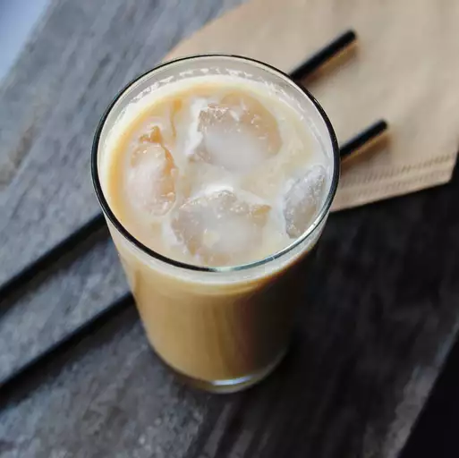

starbucks frappuccino mocha replica

i dont know ive never been to starbucks
did someone order a yappuccino
ingredients
- ½ pound dark roast ground coffee beans
- cheesecloth
- coffee filters
- 5 cups 1% milk
- ½ (14 ounce) can sweetened condensed milk
- 3 tablespoons white sugar
- 1 teaspoon white sugar
- 1 tablespoon unsweetened cocoa powder
- ½ cup hot tap water
steps
- Mix 6 cups water and coffee in a 1/2-gallon jar (such as Ball) until grounds are completely saturated. Steep for 24 hours at room temperature, stirring occasionally.
- Transfer coffee to the refrigerator and chill for 1 hour.
- Place a small colander on top of a tall, lidded plastic container. Line the colander with a 6-inch square of cheesecloth; fit a coffee filter on top.
- Pour about 1 cup of the coffee into the colander until filter begins to clog. Lift the corners of the cheesecloth carefully; twist the cloth and filter to extract the liquid. Drain the remaining liquid 1 cup at a time, using a new coffee filter each time. Repeat the process with the grounds, filtering 1 cup at a time; squeeze out as much liquid as you can. Refrigerate the concentrate until ready to use.
- Combine concentrate, 1% milk, and condensed milk in a 1/2-gallon jar.
- Dissolve 3 tablespoons plus 1 teaspoon sugar and cocoa powder together in a bowl of hot tap water. Add to the coffee-milk mixture; cover the jar and shake well.